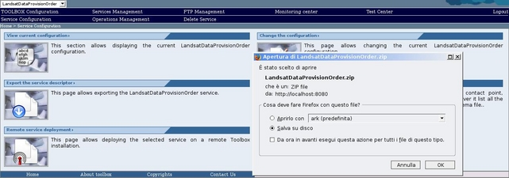

To export a service follows these steps.
Select the Service you want to export.
Click on the "Export the service descriptor" section link. The browser will display

To export the Service descriptor file (.zip) (including all the service schemas) click on "OK" button